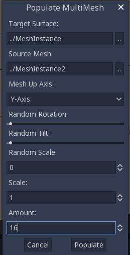

Đang cập nhật
Nội dung trang này chưa được cập nhật cho Godot
4.7
và có thể đã lỗi thời. Nếu bạn biết cách cải thiện trang này hoặc xác nhận
được rằng nó vẫn đúng, hãy gửi một pull request (bản tiếng Anh).
Sử dụng MultiMeshInstance3D
Giới thiệu
Trong trường hợp thông thường, bạn sẽ dùng một node MeshInstance3D để hiển thị một mesh 3D như mô hình người cho nhân vật chính, nhưng trong một số trường hợp, bạn muốn tạo nhiều instance của cùng một mesh trong scene. Bạn có thể nhân bản cùng một node nhiều lần và điều chỉnh transform thủ công. Đây có thể là một quá trình tẻ nhạt và kết quả có thể trông máy móc. Ngoài ra, cách này không thuận lợi cho việc lặp nhanh. MultiMeshInstance3D là một trong những giải pháp khả thi cho vấn đề này.
MultiMeshInstance3D, như tên gọi, tạo nhiều bản sao của một MeshInstance trên bề mặt của một mesh cụ thể. Một ví dụ là dùng mesh cây để phủ kín mesh địa hình bằng những cái cây có tỷ lệ và hướng ngẫu nhiên.
Thiết lập các node
Thiết lập cơ bản cần ba node: node MultiMeshInstance3D và hai node MeshInstance3D.
Một node được dùng làm đích, tức mesh bề mặt mà bạn muốn đặt nhiều mesh lên. Trong ví dụ cây, đây sẽ là địa hình.
Node còn lại được dùng làm nguồn, tức mesh mà bạn muốn nhân bản. Trong trường hợp cây, đây chính là cái cây.
Trong ví dụ của chúng ta, ta sẽ dùng một node Node3D làm node gốc của scene. Cây scene của bạn sẽ trông như sau:

Ghi chú
Để đơn giản, bài hướng dẫn này dùng các primitive có sẵn.
Giờ bạn đã có mọi thứ sẵn sàng. Chọn node MultiMeshInstance3D và nhìn vào thanh công cụ, bạn sẽ thấy một nút bổ sung tên MultiMesh bên cạnh View. Nhấn vào nó và chọn Populate surface trong menu thả xuống. Một cửa sổ mới có tiêu đề Populate MultiMesh sẽ hiện lên.


Cài đặt MultiMesh
Dưới đây là mô tả các tùy chọn.
Target Surface
Mesh dùng làm bề mặt đích để đặt các bản sao của mesh nguồn lên.
Source Mesh
Mesh bạn muốn nhân bản trên bề mặt đích.
Mesh Up Axis
Trục được dùng làm trục hướng lên của mesh nguồn.
Random Rotation
Ngẫu nhiên hóa góc xoay quanh trục hướng lên của mesh nguồn.
Random Tilt
Ngẫu nhiên hóa góc xoay tổng thể của mesh nguồn.
Random Scale
Ngẫu nhiên hóa tỷ lệ của mesh nguồn.
Tỉ lệ
Tỷ lệ của mesh nguồn sẽ được đặt lên bề mặt đích.
Amount
Số lượng mesh instance được đặt lên bề mặt đích.
Chọn bề mặt đích. Trong trường hợp cây, đây sẽ là node địa hình. Mesh nguồn sẽ là node cây. Điều chỉnh các tham số khác theo ý bạn. Nhấn Populate và nhiều bản sao của mesh nguồn sẽ được đặt lên mesh đích. Nếu hài lòng với kết quả, bạn có thể xóa mesh instance dùng làm mesh nguồn.
Kết quả cuối cùng sẽ trông như sau:

Để thay đổi kết quả, hãy lặp lại các bước trước với tham số khác.